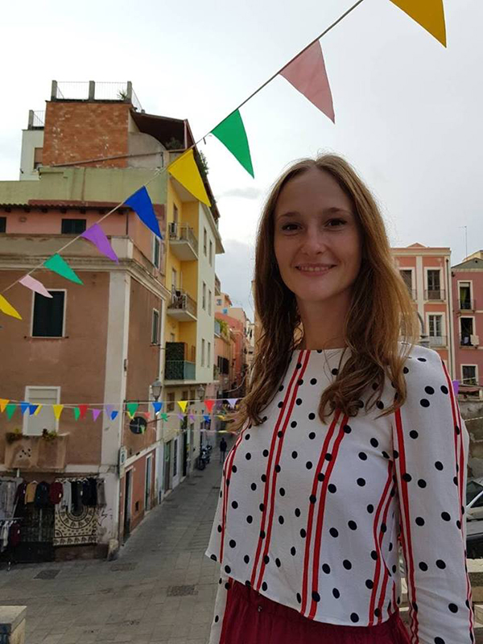

Про мене
Привіт! Мене звати Тетяна Горшкова. Я великий прихильник подорожей і тому часто задумуюсь як часто люди подорожують і взагалі чи коли-небудь вони пробували подорожувати.
За статистикою, 77% українців ніколи не виїжджали за межі нашої країни. А людей, які побували трохи далі, ніж Туреччина, Єгипет і Росія – всього 17%! Чому так мало людей хочуть побачити і пізнати світ, відчути життя і розширити свій світогляд? Точно не можу відповісти на дане питання, але точно знаю чому починати подорожувати варто вже і негайно:
1. Подорожі - це свобода!
У подорожах, хоч і на короткий період, але ми відчуваємо свободу! Ми можемо піти на пляж, а можемо не піти, ми вільні вибрати будь-яке кафе, де хочеться поїсти і нічого не готувати, у нас немає графіка, ми повністю покладаємося на свої бажання і вибір! Це й дає те захоплення, яке ми привозимо з подорожей. Почуття свободи підсилює всі враження!
2. Подорожі – це освіта!
Подорожі – найкраща школа. Тут можна навчитися психології та соціології, спостерігаючи за різними людьми і їхньою поведінкою, тут вивчаєш культурологію, занурюючись у різні культури, подорожі вчать логіці та плануванню, логістиці і філософії. Не потрібно бути фахівцем туризму, щоб поїхати в подорож. Подорож Вас навчить бути фахівцем.
3. Подорожі – це найкращі інвестиції!
Для мене найкраща інвестиція – це вкладення у власні спогади і враження. Я більш ніж впевнена, що через рік я не згадаю, коли і як купила чоботи або пальто. Але я точно ще багато років буду пам’ятати, як зустрічала світанки на узбережжі Барселони, як бродила вузькими звивистими вуличками Палермо, як купалася в холодних водах океану.